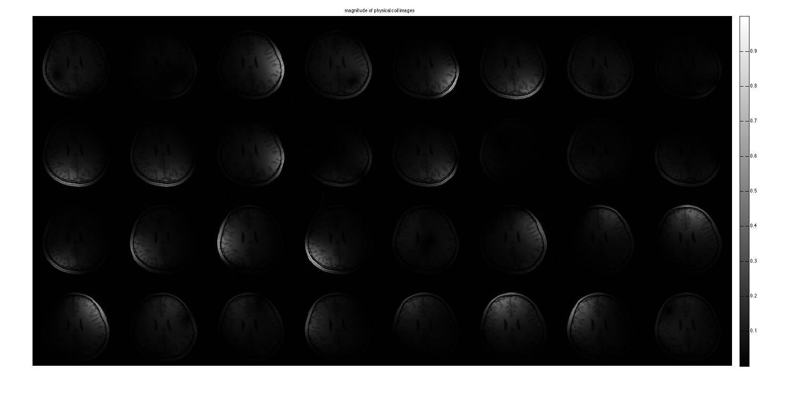
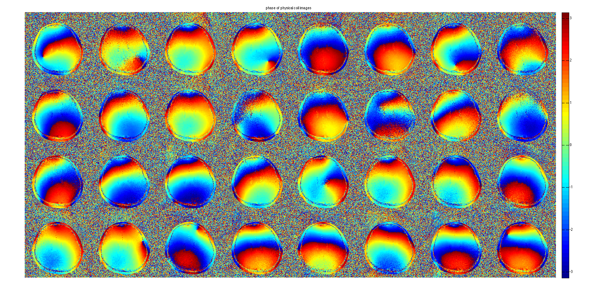
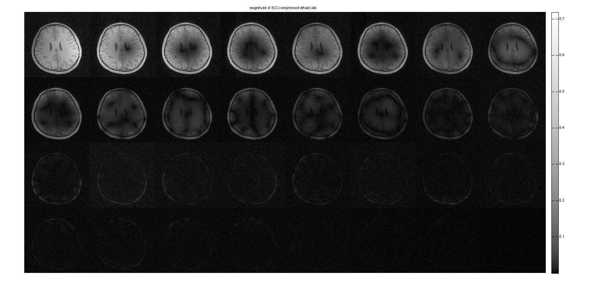
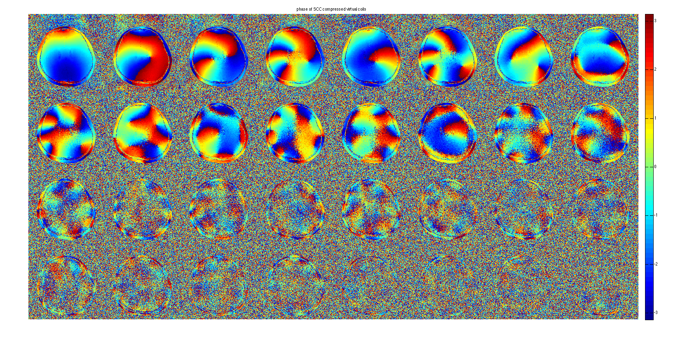
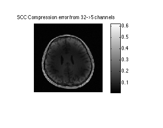
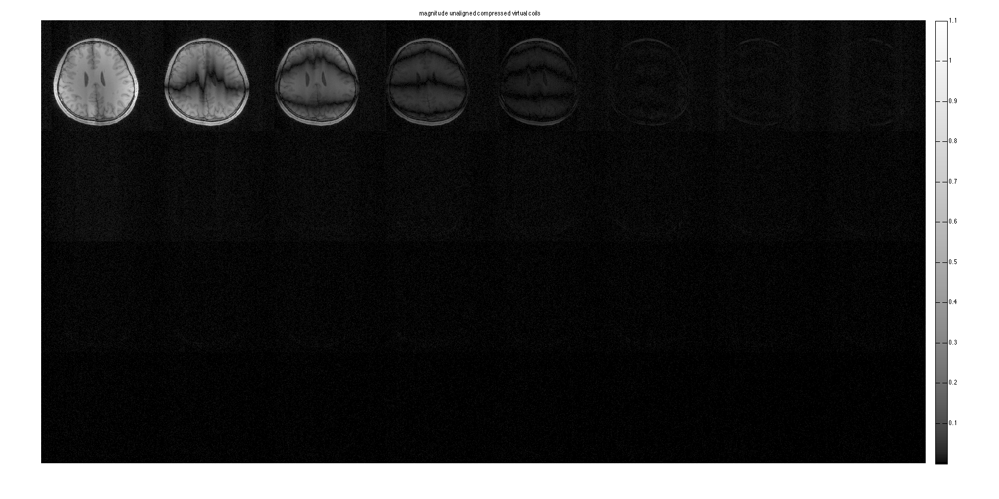
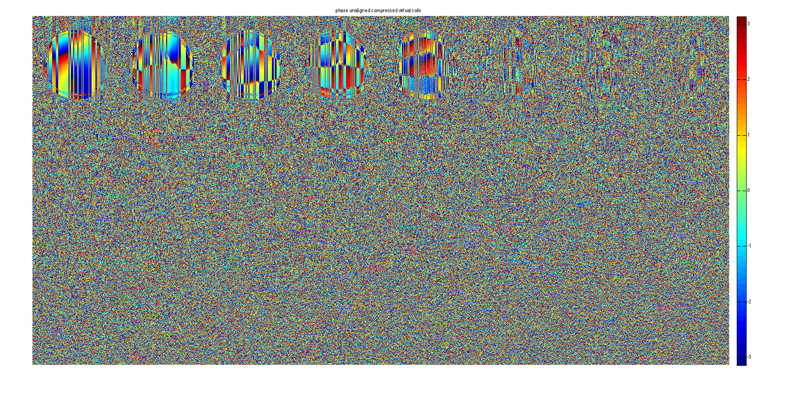
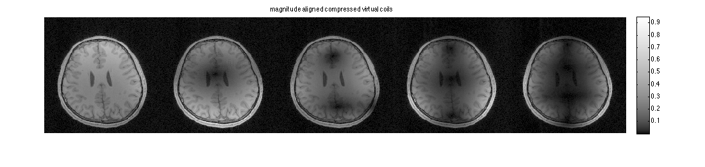
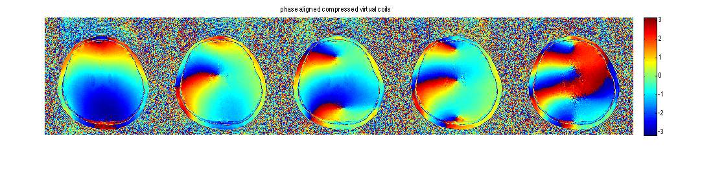

Geometric Decomposition Coil Compression
This is a demo oh the Geometric-decomposition Coil Compression (GCC) based on Zhang et. al MRM 2013;69(2):571-82. The demo shows how to use the compression and in addition it shows the use of alignment of the compression matrices. The example is on 2D data, but can also be applied on 3D as well. GCC removes correlations between channels along a fully sampled readout dimension. This allows for significant reduction in data, so parallel imaging and other multi-channel algorithms are much more computationally efficient. This demo demonstrate effective compression from 32->5 virtual channels.
Contents
Set parameters:
load brain_32ch.mat % number of compressed virtual coils ncc = 5; dim = 2; ncalib = 24; % use 24 calibration lines to compute compression [sx,sy,Nc] = size(DATA); slwin = 5; % sliding window length for GCC dispm = [4,8]; % diplay matrix settings % crop calibration data calib = crop(DATA,[ncalib,sy,Nc]);
Display coil images.
im = ifft2c(DATA); figure, imshow3(abs(im),[],dispm); title('magnitude of physical coil images'); colormap((gray(256))); colorbar; figure, imshow3(angle(im),[],dispm); title('phase of physical coil images'); colormap('default'); colorbar; 
SCC - Software coil compression
Compress channels using a single compression matrix. Based on Huang et. al, MRM 2008;26:133-141
%[U,S,V] = svd(reshape(calib,ncalib*sx,Nc),'econ'); %SCCDATA = reshape(DATA,sx*sy,Nc)*V; %SCCDATA = reshape(SCCDATA,sx,sy,Nc); sccmtx = calcSCCMtx(calib); SCCDATA = CC(DATA,sccmtx); SCCim = ifft2c(SCCDATA);
The compressed virtual coil domain shows that the data can be compressed to about 16 channels. However the error is quite large when compressing tfrom 32->5 channels.
Note that the colormap is non-linear to improve dynamic-range of the visualization.
figure, imshow3(abs(SCCim),[],dispm); title('magnitude of SCC compressed virtual coils'); colormap(sqrt(gray(256))); colorbar; figure, imshow3(angle(SCCim),[],dispm); title('phase of SCC compressed virtual coils'); colormap('default'); colorbar; figure, imshow(sos(SCCim(:,:,ncc+1:end)),[]); colorbar; title('SCC Compression error from 32->5 channels')  
GCC - Geometric decomposition Coil Compression (with no alignment)
This code computes GCC compression matrices from calibration data. The data is the transformed to the new compressed virtual coils basis.
gccmtx = calcGCCMtx(calib,dim,slwin); % compress the data GCCDATA = CC(DATA,gccmtx, dim); % compute coil image GCCim = ifft2c(GCCDATA);
The compressed virtual coil domain shows that the data can be represented effectively by 5 out of 32 channels. The error is much lower than in SCC. However the data is not smooth anymore in both magnitude and phase.
Note that the colormap is non-linear to improve dynamic-range of the visualization.
figure, imshow3(abs(GCCim),[],dispm); title('magnitude unaligned compressed virtual coils'); colormap(sqrt(gray(256))); colorbar; figure, imshow3(angle(GCCim),[],dispm); title('phase unaligned compressed virtual coils'); colormap('default'); colorbar figure, imshow(sos(GCCim(:,:,ncc+1:end)),[]); colorbar; title('GCC Compression error of 32->5 channels') 
Geometric decomposition Coil Compression (with alignment)
Here, we crop the compression matrices so they compress from 32->5 channels. We then align the matrices so they smoothly vary. This does not change the subpspace of the data -- only rotates the basis vectors.
Note that the colormap is non-linear to improve dynamic-range of the visualization.
% crop and align matrices gccmtx_aligned = alignCCMtx(gccmtx(:,1:ncc,:)); % compress the data CCDATA_aligned = CC(DATA,gccmtx_aligned, dim); % compute coil image CCim_aligned = ifft2c(CCDATA_aligned);
The compressed virtual coil are now smooth in phase and magnitude
figure, imshow3(abs(CCim_aligned),[],[1,ncc]); title('magnitude aligned compressed virtual coils'); colormap(sqrt(gray(256))); colorbar; figure, imshow3(angle(CCim_aligned),[],[1,ncc]); title('phase aligned compressed virtual coils'); colormap('default'); colorbar 